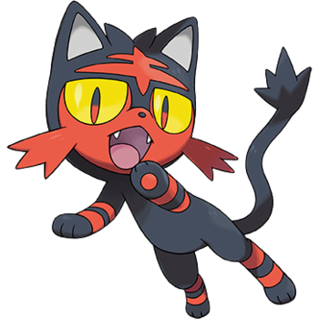

Torracat (Japanese: ニャヒート Nyaheat) is a Fire-type Pokémon introduced in Generation VII. It evolves from Litten starting at level 17 and evolves into Incineroar starting at level 34.
Biology
Torracat is a quadrupedal, feline Pokémon with black and reddish-orange markings. Its upper half is mostly black, while its lower half is mostly red-orange. The black area has several red-orange stripes: one running up the center of its head forming a short cowlick with one horizontal stripe through the center and a slightly V-shaped stripe above its eyes, one running down its spine with two more stripes going across it, and two rings around its tail. The lower half of its body simply has two black rings around each leg. Its forelegs are more developed than its hind legs. Each paw has three toes, but the front ones are larger with short, black claws. Its tail has several tufts of fur on the tip. Torracat has large eyes with black outlines, yellow sclerae, and black pupils that have a red tint along the bottom. There are two long tufts of fur on each of its cheeks with a shorter tuft just underneath on either side of its chin. Its mane stands on end when it is in a good mood and lies flat when it is not feeling well. It has a tiny, triangular gray nose and long, pointed ears with gray insides. Hanging from its neck is a round, bell-like organ, which is yellow with an orange center. When Torracat attacks, this organ sometimes flares with wing-like projections to the sides. The bell-like organ is actually a flame sac. Based on this Pokémon's emotions, the temperature of the bell will rise, and eventually, it will spit flames. The release of fire creates the sound of a bell. The mane around this Pokémon's face acts as a sensory organ, allowing it to navigate in darkness and sense hidden foes. Despite sometimes acting spoiled with those that it trusts, Torracat has a fierce battle spirit. It loves to fight, and its relentless onslaught causes others to lose the will to fight. Its punches are capable of bending iron bars with a single strike.
Facts
Origin
Torracat seems to be based on mackerel tabbies, also called tiger cats, combined with actual tiger features.
Name origin
Torracat may be a combination of torrid (very hot and dry) and cat. It may also involve 虎 tora, Japanese for tiger. Torra may also be derived from the portuguese verb "torrar" (toast, burn something).
Nyaheat may be a combination of ニャー nyā (meow), 火 hi (fire), and heat.
Evolutive Line
|  |

|

|
|---|---|---|
| Litten | Torracat | Incineroar |